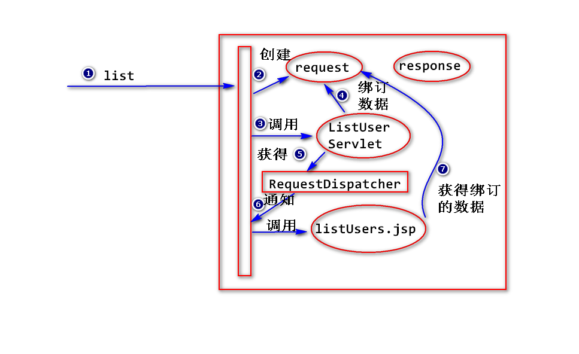

1.转发
(1)什么是转发?
一个web组件将未完成的处理交给另外一个web组件继续做。
注:
web组件(servlet/jsp)
最常见的情况：一个Servlet获得数据，然后将这些数据转发给
一个jsp来展现。

(2)如何转发?
step1. 将数据绑订到request对象上。
request.setAtribute(String name,Object obj);
注:
底层的实现 map.put(name,obj);
step2. 获得转发器。
RequestDispatcher rd =
request.getRequestDispatcher(String uri);
注:
RequestDispatcher是一个接口。
转发的本质就是一个web组件通知容器去调用另外一个web组件，
可以将RequestDispatcher(转发器)当作是一个媒介。
step3. 转发
rd.forward(request,response);
(3)特点
a.转发之后，浏览器地址栏的地址不变。
b.转发的地址有限制(要求属于同一个应用)。
练习
为用户管理添加登录功能。
要求:
用户填写用户名和密码，然后提交表单，服务器进行验证，
如果有符合条件的记录，则登录成功，跳转到用户列表页面，
否则登录失败，跳转到登录页面，并给用户相应的提示
("用户名或密码错误")。
step1.添加login.jsp
step2.添加LoginServlet(处理登录请求)
读取用户名(username)和密码(pwd)
User user = UserDAO.find(username);
if(user != null &&
user.getPwd().equals(pwd)){
response.sendRedirect("list")
}else{
request.setAttribute("login_failed",
"用户名或密码错误");
request.getRequestDispatcher("login.jsp").for...
}
step3. 修改login.jsp